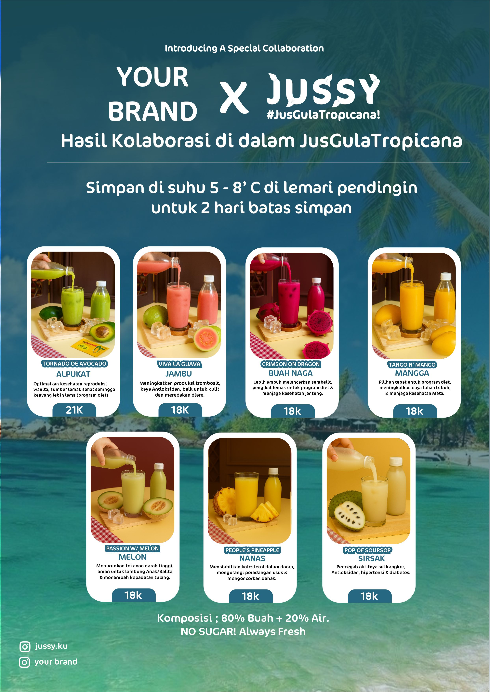
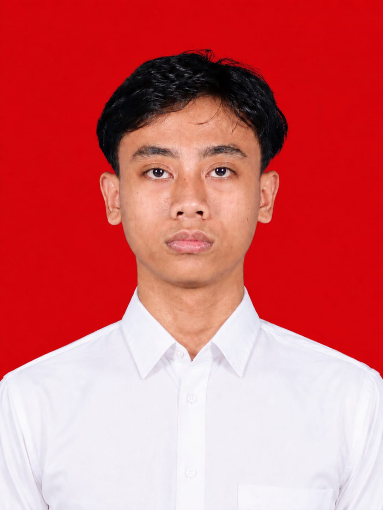
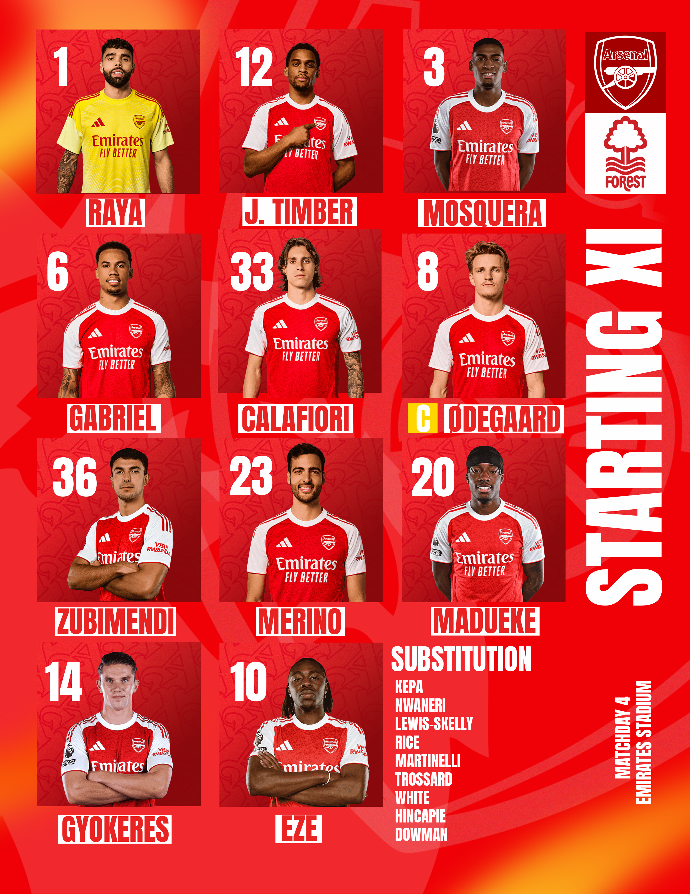
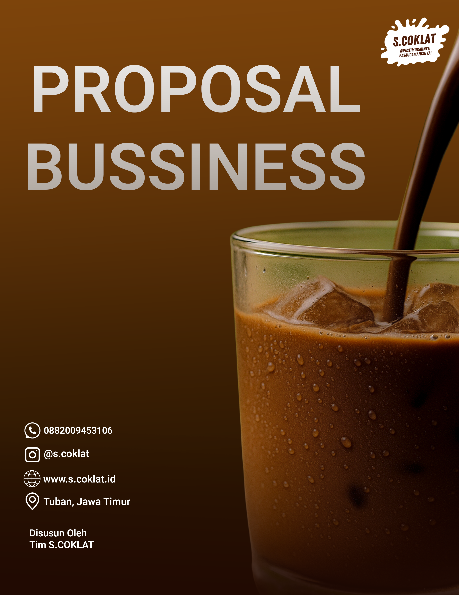

VISUAL DESIGN PORTOFOLIO PRIBADI · 2026
Halo, saya
Nufail Al Kamili.
Mahasiswa Sistem Informasi yang tertarik pada teknologi, desain digital, dan pemecahan masalah. Saya senang mengeksplorasi ide lalu mengubahnya menjadi karya yang fungsional dan bermakna.
INDEPENDENT THINKER · CREATIVE EXPLORER

Curious by nature ✳
DESIGN ✳ TECHNOLOGY ✳ PROBLEM SOLVING ✳ CONTINUOUS LEARNING ✳ DESIGN ✳ TECHNOLOGY ✳
01 / Selected works
Beberapa karya
yang saya buat.
Ruang untuk menampilkan proyek, tugas, eksperimen, dan proses belajar.

VISUAL DESIGN
PROPOSAL BUSINESS02 / About me
Tentang saya.
Profil singkat, latar pendidikan, dan aktivitas saat ini.
“Belajar bukan hanya mengumpulkan pengetahuan, tetapi juga memahami cara menggunakannya.”
Perkenalkan, saya Nufail Al Kamili, mahasiswa Sistem Informasi di Universitas Negeri Surabaya. Saya memiliki ketertarikan pada [bidang yang diminati] dan senang mempelajari bagaimana teknologi dapat digunakan untuk menjawab kebutuhan nyata.
Saat ini saya sedang mengembangkan kemampuan melalui perkuliahan, proyek mandiri, dan eksplorasi berbagai tools digital. Saya terbuka untuk belajar, berkolaborasi, dan mencoba tantangan baru.
Nufail Al KamiliNama
26051214095Nomor Induk
Sistem InformasiProgram Studi
03 / What I can do
Kemampuan yang
terus saya kembangkan.
Cantumkan kemampuan yang benar-benar kamu kuasai atau sedang pelajari.
Design & Creativity
Menyusun ide visual dan merancang komunikasi yang jelas serta mudah dipahami.
Technology
Membangun pemahaman dasar teknologi dan mengeksplorasi tools untuk membuat solusi digital.
Analysis & Thinking
Mengamati masalah, memahami pola, dan menyusun pendekatan berdasarkan konteks.
04 / Achievement
Perjalanan .
Prestasi, sertifikat, kepanitiaan, pelatihan, atau milestone belajar.
2026
Menyelesaikan pendidikan SMK DKV
Selama 3 tahun belajar di SMK DKV mengembangkan skill penguasaan software desaim, pengoperasian kamera, dan berbagai tahapan produksi dalam ekonomi kreatif.
Nama lembaga
SMKN 1 Singgahan
SMKN 1 Singgahan
2025
Mengikuti Program PKL Lain
PKL Selama 6 bulan di bidang desain grafis, editing video creative dan produksi konten media sosial.
Nama Lembaga
Tuban Creative Hub
Tuban Creative Hub
05 / Get in touch
Mari buat
sesuatu yang berarti.
Terbuka untuk berdiskusi, bertukar ide, belajar bersama, maupun kesempatan kolaborasi. Silakan hubungi saya melalui kanal berikut.